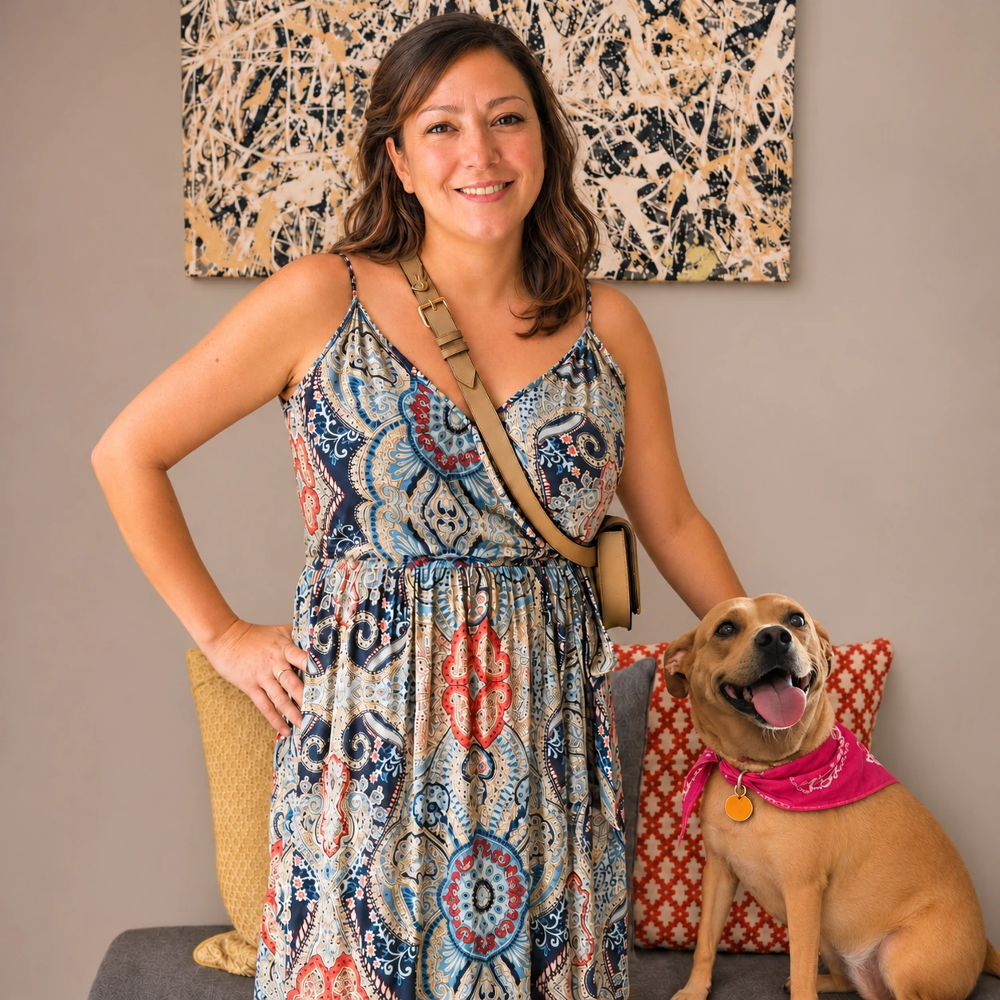

About
A little about me

I'm Stephanie, a Product Designer with a background that started on the other side of the user experience.
I spent 16 years at USAA helping people navigate complex situations, listening to their frustrations, and learning how much clarity and thoughtful communication matter. That experience still shapes the way I approach design today.
I'm naturally curious, persistent, and a little obsessed with figuring out how things work. I enjoy untangling complicated problems, questioning assumptions, and turning messy ideas into experiences that feel simple and intuitive.
As an independent designer, I've learned to be resourceful, take ownership, and keep pushing until the details make sense. I'm especially excited about how AI is changing what designers can explore, build, and bring to life.
When I'm not designing for others, I'm usually dreaming up apps to solve my own everyday frustrations, tackling a home renovation project, or disappearing down a rabbit hole about whatever has caught my interest. I also love a good book, a challenging puzzle, and spending time with my 14-year-old pup Katie Cupcake.